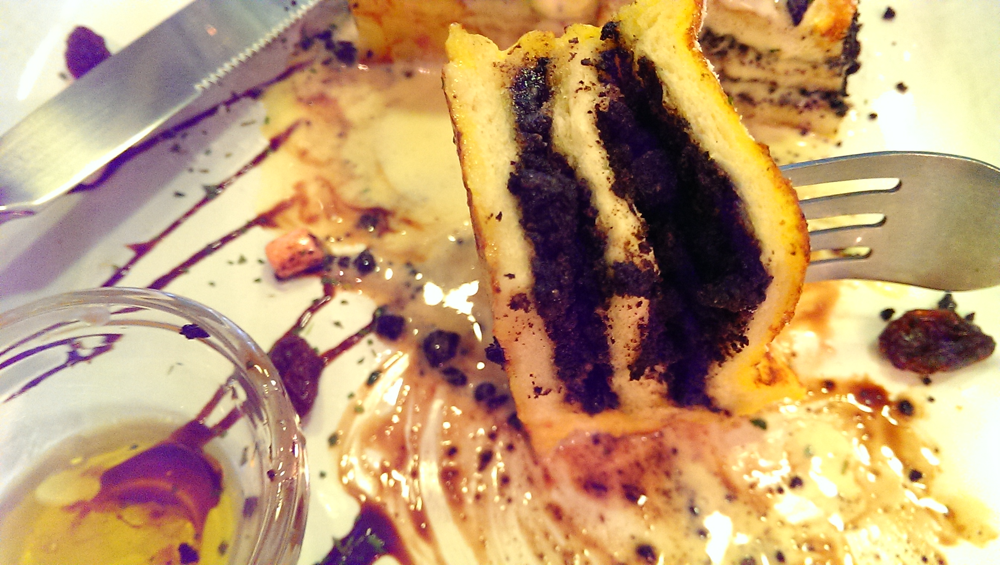

A Series of Unfortunate Events by Lemony Snicket x Me ft Oreo French Toast
First weekend that I'm staying in the city since I've gotten here! Time to start picking away at the list of tasks that I've been putting off: laundry, catching up with friends and family, booking airplane tickets...
What seems like a boring list of chores turned out quite eventful, starting with my dramatic way of lugging my big ol' pile of laundry in a freaking suitcase (granted I haven't done laundry in three weeks, so I guess it's expected that my pile got so colossal). After meeting some friendly Americans who helped me navigate the different sizes of small, medium, large washers, dryers, and the coin exchange machine, I set out for brunch at o2, a cute cafe that I found on the internet. In true fashion, I got lost a couple of times before finding the right address...and it wasn't there. A local probably took pity on my shocked, confused self and told me that o2 moved. Moved?!
o2 , get your crap together! Don't dangle a carrot (in this case waffle) in front of a hungry girl! Update your website so the right address shows up for God's sake -_- Really, no me gusta! Then comes the whopper....it started raining. Hard. Guess who forgot to bring an umbrella?
Standing outside in the rain scrambling to find a place to eat is quite an experience, one I wouldn't recommend. I wandered into ma dang tang Cafe, and ordered an Oreo French toast. Waiting for my food, a BOOM almost made me jump out of my chair. That's right, Taipei just decided right then that it felt like some thunder with that heavy rain. Hey, at least this time I'm inside, right?
Ma dang tang Cafe is a charming little space, and seems to have an obsession with cows. I played around with me phone and started writing this post during my wait. My Oreo French toast, which they called Queen Victoria's toast, finally came and was pretty to look at as expected.This style of French toast is something I've never had - it had a fluffy center or Oreo crumbs, topped with vanilla ice cream and decorated with marshmallows and a dainty little Oreo. The price was also quite reasonable at NT 130. I had originally wanted a waffle (which they don't have here), but I definitely do not regret having the French toast instead. You bet I devoured that thing, even down to the last marshmallow.
A close up of the Oreo filling....
The rain has let up, and laundry's also done. But for some reason, I want to stay in this cafe until I finish this post. Listening to Cantonese pop songs play softly in the background as I write is a pretty peaceful feeling, something that I haven't felt for a long time. I like to think if Lemony Snicket's A Series of Unfortunate Events had a real life version, it would be me. Anything that can possibly go wrong in a situation will most likely happen to me, and usually involves getting lost. But, I am an eternal pessimist, and I usually conveniently leave out that most of my misadventures turn out alright in the end. For today, the sun is out again and I am rewarded for rough morning with a yummy Oreo French toast. Not too shabby, right?
Until next time...